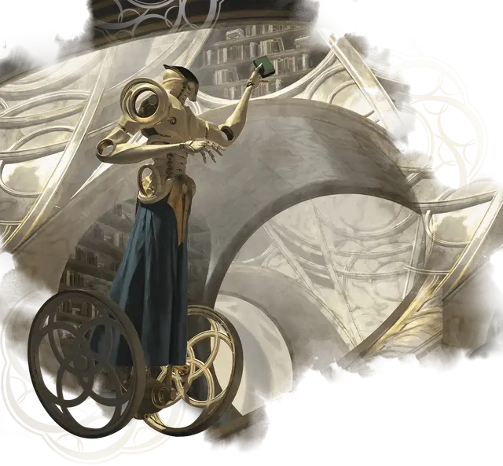

Механический архивариус
Cogwork Archivist
Большой Конструкт, законно-нейтральный

Класс Доспеха 17 (природный доспех)
Хиты 90 (12к10 + 24)
Скорость 40 футов
| мод | спас | ||
|---|---|---|---|
| СИЛ | 18 | +4 | +4 |
| ЛОВ | 10 | +0 | +0 |
| ТЕЛ | 15 | +2 | +2 |
| мод | спас | ||
|---|---|---|---|
| ИНТ | 17 | +3 | +3 |
| МДР | 11 | +0 | +0 |
| ХАР | 6 | −2 | −2 |
Навыки Восприятие +2, История +5, Магия +5, Природа +5, Религия +5
Иммунитет к урону яд
Иммунитет к состояниям испуг, истощение, окаменение, отравление, очарование
Чувства тёмное зрение 60 футов, пассивное Восприятие 12
Языки Все
Опасность 4 (1100 опыта)
Бонус мастерства +2
Особенности
Сопротивление магии. Архивариус совершает с преимуществом спасброски от заклинаний и прочих магических эффектов.
Действия
Мультиатака. Архивариус совершает две атаки Хватательными конечностями.
Хватательная конечность. Рукопашная атака оружием: +6 к попаданию, досягаемость 15 футов, одна цель. Попадание: 13 (2к8 + 4) дробящего урона и цель схвачена (Сл высвобождения 14). Архивариус может одновременно держать схваченными не более двух целей.
Использование заклинаний. Архивариус накладывает одно из следующих заклинаний, используя Интеллект в качестве базовой характеристики и без использования материальных компонентов:
• Неограниченно: пляшущие огоньки [dancing lights], фокусы [prestidigitation];
• 2/день: тишина [silence].
Описание
Механические архивариусы, запрограммированные на знание обширного каталога знаний Стриксхейвена, служат хранителями различных библиотек университета. Высокий металлический каркас архивариусов оснащен длинными шарнирными конечностями и выдвижными инструментами для хранения, которые они используют для организации и сохранения документов со всей извилистой истории Стриксхейвена. Среди высоких полок Библиоплекса можно найти множество механических архивариусов, которые одновременно извлекают свитки для любопытных студентов, строго следя за любыми шумными группами, которые могут нарушить атмосферу спокойствия.